I was up and out of the Best Western in Dillon pretty early after sampling the buffet breakfast. The bike trail from Dillon all the way to Breckenridge was well done in every way. It took me away from the very busy road and was a nice grade the whole way.
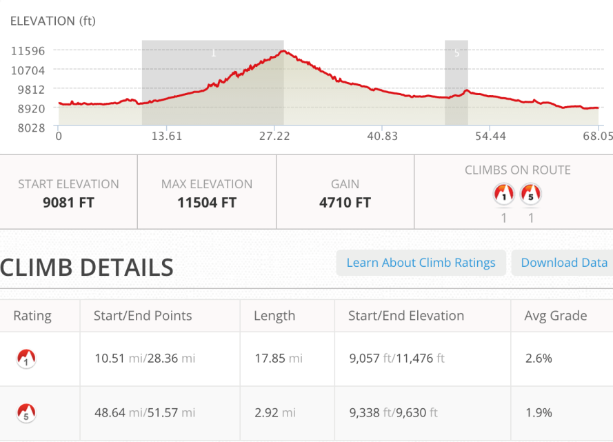
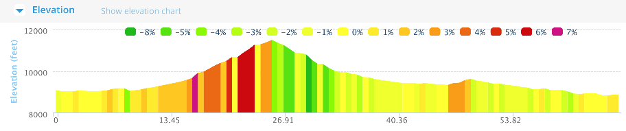
Fresno and Breckenridge
I had planned on stopping in Fresno to get a haircut and beard trim. My helmet had worn tracks into my already ridiculous looking scalp so I needed a buzz. The shops in Fresno were closed so it was on to Breckenridge. After a nice ride on the Blue River Bikeway I found Kut & Klip Barber & Beauty. I was in and out in 30 minutes so I stopped to get a bagel and coffee at The Coffee Pot at the edge of town and also stopped at the Avalanche Sports Bike/Ski place across the street to get a new Camelbak and bike arm sleeves. Before leaving Lima a week before I had ripped the mouthpiece of my camelbak resulting in a very wet back and also a compromised system heading into the dry country on the other side of Boreas Pass.
The lakes and reservours had been almost empty the past few times I had been to this area. It was nice to see that the spring snow had done the job. When I reached Hartsel the water was everywhere with the east west roads acting as a barrier to the water coming out of the mountains.
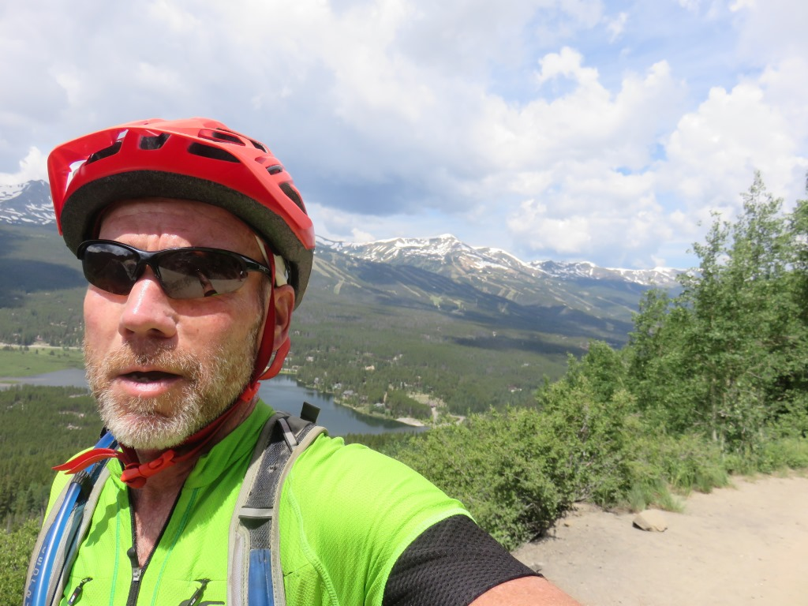
Looking back toward Breckenridge on Boreas Pass Rd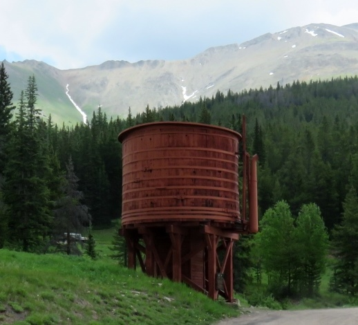
Water filling station for old railroadI left Breckenridge and started up past all the condos and ski houses for the first couple miles of a 8-9 mile climb. The grade was rideable with the exception of only a few sections. After 4 miles the road narrowed, turned to gravel and got a bit steeper. I was also again seeing the dark clouds all around the top of the peaks.
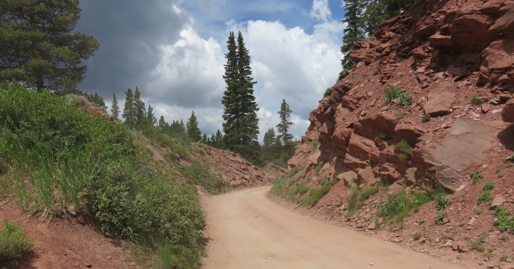
Boreas Pass RdAbout 1/2 mile from the top I stopped to put my raincoat on and took cover for a short stop when it looked like rain. The rain didn't come then but I needed full rain gear on the decent a little while later.
Boreas Pass - 11,482ft
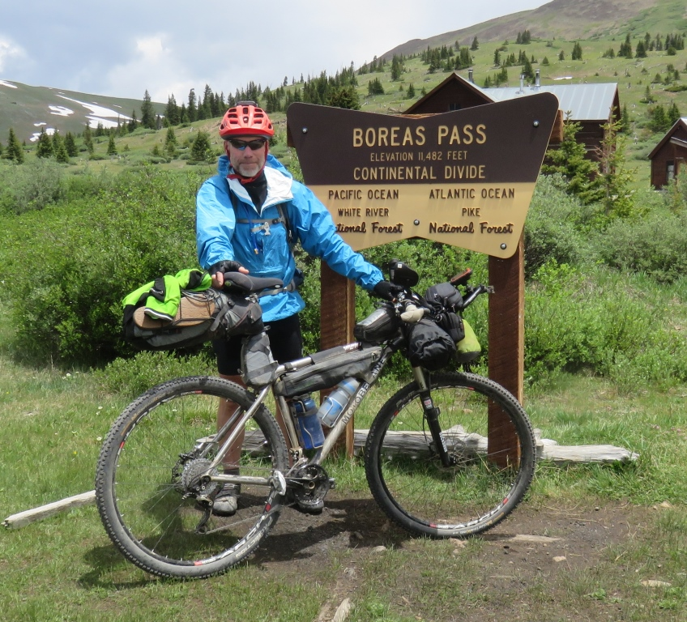
Highest pass I traveled through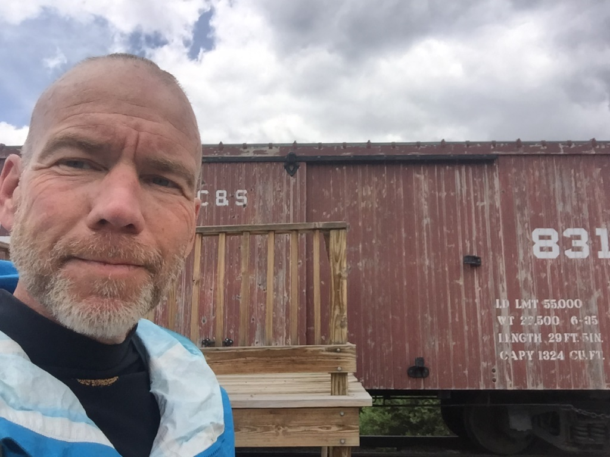
Railroad car to show that there used to be a railroad thru here.I was pretty excited to get to the top of Boreas Pass. Breckenridge and Broeas Pass had been another of the "hurdles" I had set in the preceding weeks. Getting here and understanding how far I had come (almost 1,700 miles) gave me a pretty good boost but always left the question about how much longer is this going to go on.
At this point after short cutting around Kremmling, Co I had lost touch with the guys I had been seeing and was once again on my own. We would reconnect in Salida two days later after my two relatively short days.
Over the divde and down into ...
For safety sake I skipped the single track on the back side of Boreas Pass and road thru the rain on the gravel road. In all it was about a 10 mile downhill into Como which had no services I could see. Later in the day Andrew would stay in the closed down Como hotel.
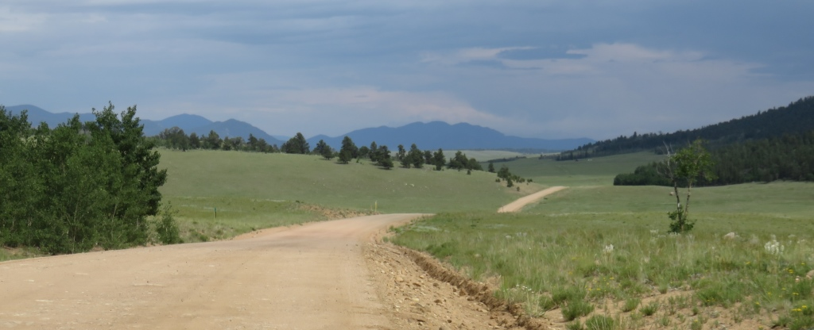
On the back side of the big mountainsThe ride from Como to Hartsel was one of the worst 10 mile stretches of wash board road I had been on.
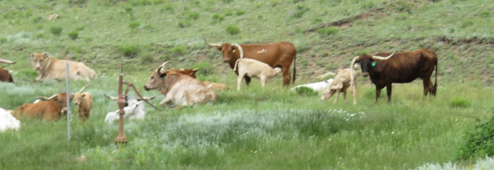
The horns on these quys didn't seem like they would be very effective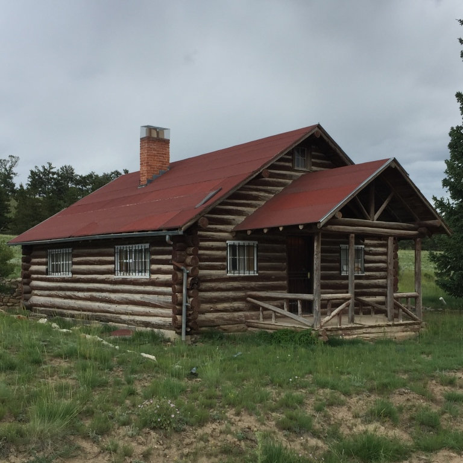
Considered stopping here to avoid the rain.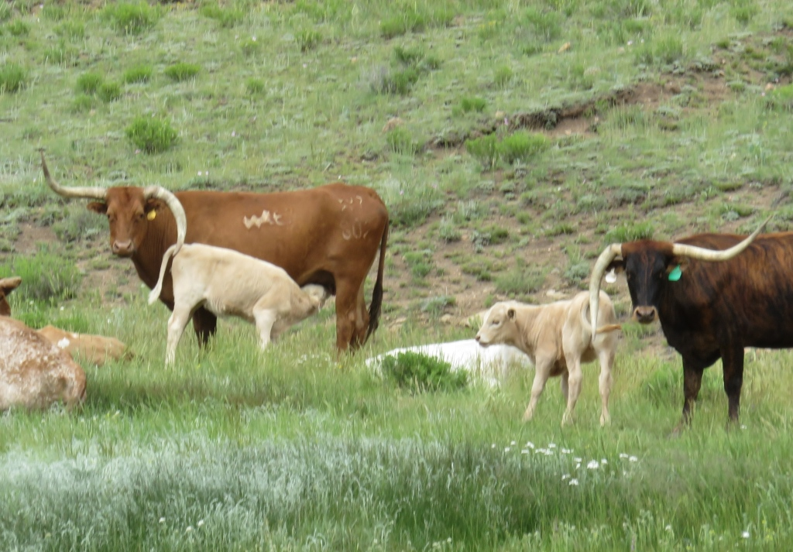
Cows along the wayThere were rain clouds all around but the rain held off until I reach the Highline Cafe & Saloon in Hartsel.
Hartsel
I had only been there a short time before the rain really came down. I was able to bring my bike into the bar.
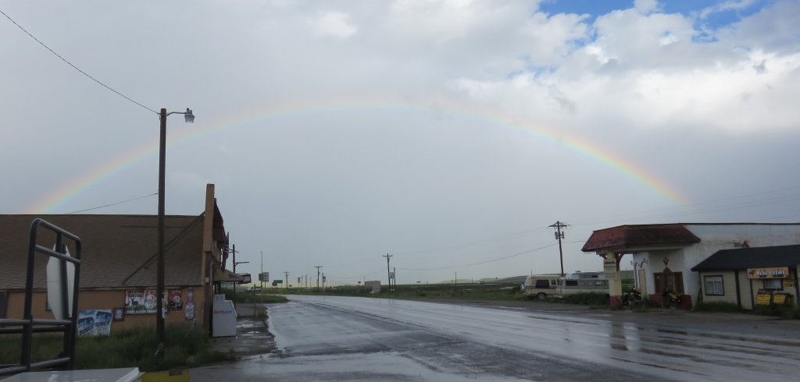
Rainbow over bustling downtown of Hartsel, CO.It was interesting trying to find a place to sleep in Hartsel. There are no hotels or campgrounds but lots
of abandoned looking buildings. The owner of the Highline Cafe offered the two horse trailers behind the the
closed down gas station in the picture above. The two cross country riders I met in the bar were leaning
toward staying there. There was a school with a large covered porch and an old jail across the road. The
owner said these were off limits.
The bartender mentioned there was a "gazebo" behind the church by the
fire house and said no one would mind it I stayed in there. It had been raining off and on for a few hours
so I wanted to have a roof over my head. I went down to the convenience store and happeded to see the County
Sherrif. I asked his permission to sleep in the Gazebo and after a brief discussion he understood I wasn't
taking up residence and said it would be ok. He took my name just to have it if someone called complaining
about me. He could assure them I was moving on in the morning. The gazebo was a garage open on three sides
but worked for me. After finding an old formica table top I could sleep on I was all set. This is when I
determined that my sleeping pad had a hole. So instead of enjoy my night in the Gazebo I had a night on a
hard table.
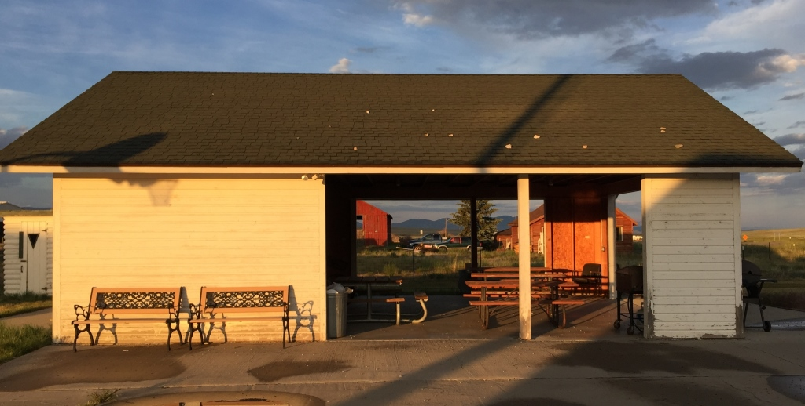
Home for the night - the town "Gazebo"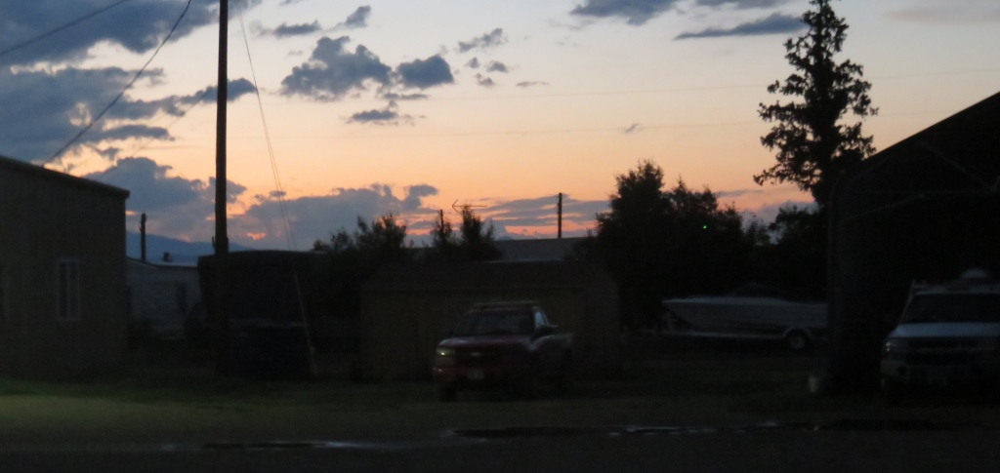
Sunset from the Gazebo. I slept when it got dark.Thursday, July 2 - 68 miles Dillon to Hartsel, CO
See full screen map To go places and do things that I've never done before – that’s what living is all about.Text by Jim O'Brien . Photographs by Jim O'BrienTD on Flickr.